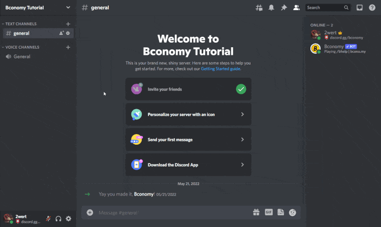

Bconomy Not Working?
Bconomy Not Working?
Follow the steps below to fix common issues with Bconomy!
1. Re-Invite Bconomy
Re-invite Bconomy by hitting the bot's profile, and selecting your server. This allows the bot to access the permissions needed to function. No need to kick at all!
2. Allow Integration Channels
Whitelist the channels you want to use Bconomy in to allow its commands and buttons to be used there. OPTIONAL: Disallow channels you don't want the bot run in!
3. Allow Command and Emoji Access
Make sure your users and the Everyone role can interact with bots so they can play Bconomy. Allowing External Emoji access is also needed for some elements to properly display - these need to be set for users due to a quirk with Discord permissions. (You can set these permissions per-channel instead of server-wide if you'd like)
Still not working?
Join our Support Server and we'll try and fix your issue as soon as possible :)